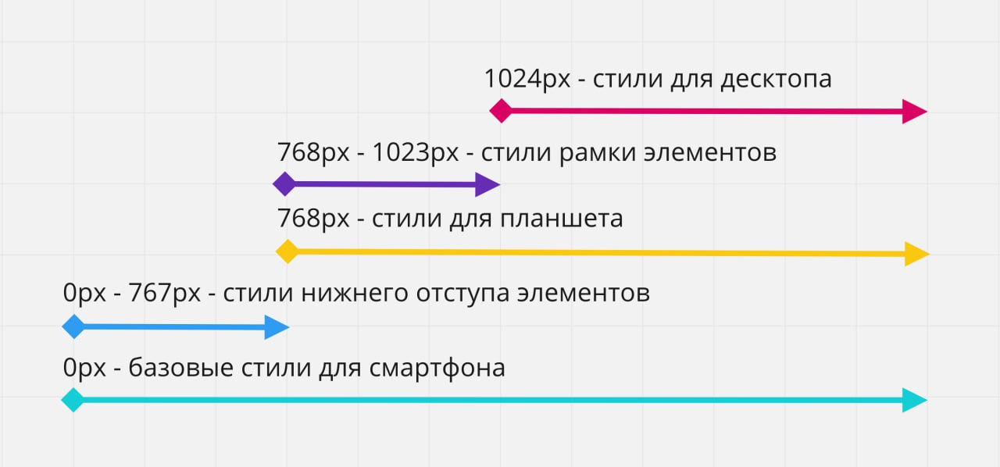

Медиа запросы
Медиа запрос это то что делает возможным созданием современных адаптивных страниц, которые одинаково хорошо выглядят на любом экране юудь то desctop или смартфон. Все сводится к применению того или иного css правила, в зависимости от размера окна браузера(область просмотра, viewport), настроек браузера или возможностей устройства.
-
Алгоритм применения стилей следующий
- Разработчик описывает набор медиа запросов и css правил внутри них
- Браузер отслеживает изменение размеров viewport
- Браузер применяет css правила из медиа запросов, подходящих под текущий размер вьюпорта
То есть медиа запросы это инструкции вида "когда страницу открыли на десктопе я хочу чтобы цвет текста был красным, а при открытии на мобильном - зеленым"
Синтаксис
@media media-type and (media-future) {
набор css правил
}
Медиа запрос это специальная css конструкция, объвляемая директивой
@media за которой может следовать тип устройства (media-type) и медиа
функции (media-future), выражения, проверяющие характиристики
устройств (например ширину вьюпорта). Медиа функция это логическое
выражение, которое возвращает истину(true) или ложь (falce)
например если необходимо сделать фон на body оранжевым при ширине
viewport 900px и шире, необходимо записать след медиа запрос
style.css
@media screen and (min-width: 900px) {
body {
backgrond-color: orange;
}
}
Человеческим языком это можно прочитать как "если страница отображается на экране, ширина которого не менее 900px, необходимо применить указаное css правило.
Условные проверки может быть настолько сложным или простым насколько этого требует ситуация. В большистве случаев достаточно указать медиа тип устройства (чаще всего это screen) и проверить только ширину viewport
@media print {
медиа запрос применяется во время печати документа
}
@media screen and (min-width: 400px) {
Этот запрос применяется при ширине viewport более 400px
}
Media type
Медиа тип используется для описания типа устройств, на которых может отображаться веб страница. Всего есть 3 типа, которые поддерживаются всеми современными браузерами
- all - если не указать тип носителя по умолчанию будет использоваться это значение, которое означает любое устройство
- print - соответствует принтерам и устройствам, предназначеным для воспроизведения печатного варианта, например веб браузера, отображающего документ в режиме (предварительный просмотр)
- screen - описывает устройства с физическим экраном - смартфоны, планшеты, мониторы, телевизоры и т.д, т.е все что не охватывает print
Медиа функции
Две наиболее часто использующиеся медиа функции, которые позволяют определить ширину viewport браузера это min-width и max-width. Указывается минимальное (min-width) или максимальное(max-width) допустимые шарины viewport при которых применяются правила из медиа запросов
Применяется когда ширина viewport более 900px
@media (min-width: 900px) {
body {
backgrond-color: orange;
}
}
Применяется когда ширина viewport меньше 600px
@media (max-width: 600px) {
body {
backgrond-color: blue;
}
}
Логические операторы
Медиа тип и медиа функции могут быть разделены необязательными логическими операторами not, end, only - значения по умолчанию.
@media only|not media-type only|not|and (media-future) {
набор css правил
}
Оператор end
Оператор and(и) используется не только между типом носителя и медиа условием но и для связывания нескольких медиа функций с проверками значений
@media screen and (min-width: 400px) and (max-width: 800px) {
body {
backgrond-color: green;
}
}
Такой медиа запрос выполнится только если веб страница открыта на экране, а ширина viewport от 400px до 800px
Оператор ","
Оператор "," (буквально "или") позволяет указать набор выражений при выполнении хотя бы одного из которых выполняется медиа запрос
@media (max-width: 600px), (min-width: 900px) {
body {
backgrond-color: red;
}
}
То есть это просто перечесление набора меди запросов при которых должны применятся стили. Это можно записать как 2 разных медиа запроса, но тогда стили body будут дублироваться
@media (max-width: 600px) {
body {
backgrond-color: red;
}
@media (min-width: 900px) {
body {
backgrond-color: red;
}
}
Оператор not
Оператор not (буквально "не") позволяет сделать отрицание, т.е отменить медиа запрос. Ключевое слово not добавляется в начало медиа запроса и применяется ко всему медиа запросу целиком. Используется очень редко
@media not print {
условие
}
При использовании оператора not обязательно должен быть указан тип носителя, потому что по умолчалнию для него будет установлено значение all и выражение not all будет читаться как "не все" и медиа запрос не выполнится никогда
@media not (max-width: 500px) {
никогда не выполнится
}
@media not screen and (max-width: 500px) {
выполнится если ширина будет более 500px
}
@media (min-width: 500px) {
в таком случае для простоты чтения когда лучше использовать min-width:
500px br }
Переопределение стилей
Ничего не мешает браузеру применять более одного медиа запроса одновременно, если подходят по условию. Медиа запросы не добавляют специфичности к селекторам, которые они содержат, но порядок правил по прежнему имеет значение, т.е правила находятся в медиа запросах, учавствуют в стандартном каскадировании при составлении финальных стилей элементов.
Базовый стиль
body {
backgrond-color: red;
}
При 900px и шире переопределяем фон
@media screen and (min-width: 900px) {
body {
backgrond-color: green;
}
}
При этом переопределяются только одинаковые свойства, а не все правило целиком, не дублируются предидущие, которые подходят и для текущего медиа запроса
Мета тег viewport
Область просмотра(viewport) - это видимая прямоугольная область веб страницы.
Мобильные браузеры отображают веб страницу во viewport который шире
чем физический экран устройства. По умолчанию ширина viewport у
мобильных браузеров зависит от производителя устройства, не совпадает
с размером экрана устройства и чаще всего равна 980px. Это значит что
мобильный браузер считает этой величиной относительно которой он
должен применять медиа запрос
Т.е медиа запросы ориентированы на моб устройства просто не
применяются или будут переопределены в мобильном браузере. Например
при открытии веб страницы на экране шириной 400px применяется медиа
запрос min-width: 768px переопределив мобильные стили и мы увидим
вариант страницы для планшета, хотя открыли на телефоне
Страницы адаптированые для просмотра на разных устройствах должны
содержать в разделе head мета тег viewport, он сообщает браузеру каким
образом нужно контролировать размеры и масштаб viewport.
<head>
<!-- Другие мета-теги -->
<meta name="viewport" content="width=device-width,
initial-scale=1.0" />
<title>Мета-тег viewport важен для адаптивных
страниц</title>
</head>
- width=device-width - устанавливает ширину viewport (width) равный физической ширине экрана устройства (device-width)
- initial-scale=1.0 - устанавливает соотношение масштабирования 1к1 между css пикселями и аппаратными пикселями устройства

Типы верстки
В современном вебе используются новые подходы в создании сайтов, они сочетают в себе элементы резиновой верстки и новые, современные приемы, такие как адаптивность(adaptive) и отзывчивость(responsive). Техники адаптивной и отзывчивой верстки отличаются тем, как задается ширина контейнера и вложенных в него элементов
Отзывчивая(responsive) веб страница имеет несколько вариантов
отображения, переходы между ними плавные, элементы и контейнер тянутся
как резиновые. При изменении viewport блоки плавно ужимаются или
растягиваются как резиновые, а когда наступает точка перелома
(брейкпоинт) имеет свое расположение так, чтобы оптимально занять все
свободное пространство по горизонтали.
Адаптивная веб страница имеет несколько вариантов изображения в
отличии от отзывчивой страницы буквально. Дизайн изменяется рывками в
жестко заданых точках перелома и не тянется между ними
При составлении медиа запросов нужно ориентироваться на точки перелома дизайна, т.е такие значения ширины viewport в которых дизайн существенно меняется. Определить их можно по макету, нарисованого дизайнером
Отзывчивая верстка
Адаптивна верстка
Обоим контейнерам задается min-width - ширина viewport ниже которой дизайн не поддерживается, у пользователя с более узким экраном появится полоска прокрутки
.contain {
min-width: 320px;
}
Отзывчивому контейнеру один раз задается свойство max-width в базовых стилях чтобы он произвольно тянулся но максимально был не шире указаного значения
.contain .responsive {
max-width: 1140px;
}
Адаптивному контейнеру задается начальное значение максимальной ширины, после чего она переопределяется в каждой точке перелома
.contain.adaptive {
max-width: 320px;
}
@media screen and (min-width:600px) {
.contain.adaptive {
max-width: 600px;
}
}
@media screen and (min-width:900px) {
.contain.adaptive {
max-width: 900px;
}
}
@media screen and (min-width:1140px) {
.contain.adaptive {
max-width: 1140px;
}
}
}
Какой переход использовать все зависит от дизайна, типа веб сайта и финансовых возможностей заказчика. Для большинства веб сайтов малого и среднего бизнеса достаточно адаптивной верстки. Отзывчивая верстка дороже в дизайне, проэктировании и разработке т.к делать ее сложнее и дольше, но она незаменима в интерфейсах современных браузеров и веб приложений. Иногда бизнес задачи лучше выполнить отдельно в мобильной версии или вообще нативное приложение вместо веб сайта
Mobile-first
Исторически сложилось так, что дизайнеры начали разработку дизайна
сайта для большого экрана, т.е первый гланый дизайн делался для
рабочего стола компьютера, т.к предполагает большую функциональность
Проблема такого подхода в том, что приоритет отдается пользователям
компьютеров и ноутов, хотя сейчас по статистике доминирует мобильный
траффик. Многие элементы дизайна и функционала, котрые отлично
смотрятся и работают на рабочем столе компьютера довольно сложно
перенести на моб экран.
Стратегия mobile-first идет от обратного - сначала делается мобильная
версия, после чего планшетная и десктопная. Это делает актуальную
информацию легко доступной и позволяет скрыть или изменить элементы на
любом экране
Веб сайт должен быть хорошо оптимизирован для поисковых систем CEO и отвечать всем требованиям UX(user expiriens) чтобы прибывание пользователей на сайте было максимально удобным и понятным через его моб устройство. Поэтому одним из самых важных требований mobile-first разработки это:
- Показать самое важное содержание в первую очередь
- Веб сайт должен быть легковесным и оптимизированым т.к сорость моб сети может быть слабой в зависимости от местоположения пользователя
- Веб сайт не должен загружать больше ресурсов чем требуется пользователю для получения нужной информации
- Доп информация должна грузиться только по требованию пользователя
При разработке веб сайта у такого подхода большие приимущества
- Один веб сайт - для всех устройств только один проэкт. Сокращает необходимое кол-во разработчиков
- Удобство интерфейса - пользователи получают важное содержимое страницы в первую очередь
- Скорость загрузки - страница будет грузится быстрее на моб устройствах из-за того, что кол-во загружаемых и отображаемых ресурсов будет меньше
- Рейтинг в поиске - например в гугл не только отдается приоритет сайтам, оптимизированым для моб устройств но и учитывает время открытия страницы
Mobile-first css
Технически реализация mobile-first довольно проста - стили для моб устройств это базовые стили вне медиа запросов, после чего для каждой точки перелома добавляется медиа запрос, в котором переопределяются необходимые базовые стили из промежутка или добавляются новые. Поэтому в медиа запросах в основном используется функция min-width
.element {
базовые стили
}
@media screen and (min-width: ширина планшета) {
.element {
стили планшета
}
}
@media screen and (min-width: ширина десктопа) {
.element {
стили десктопа
}
}
То есть создается легковесная версия стилей для моб устройств, а все
стили для больших экранов закрываются внутри соответствующих медиа
запросах, при этом HTML разметка не меняется
Плюс такого подхода в том, что для моб стилей практически никогда не
нужно залавать позиционирование, например при помощи flex-box, поэтому
весь контент идет в одну колонку друг за другом - дефолтное поведение
блочных элементов в стандартном потоке документов. Это значит что в
медиа запросах для более широких экранов не прийдется переопределять
позиционирование
Рассмотрим медиа запрос для простой страницы с двумя точками перелома
768px и 1024px. css правило внутри медиа запрома просто добавляет
новые стили или переопределяет предидущие
Плюсы такой верстки:
- Базовые стили css кода более чистые т.к нам помогает поток документов и блочная модель элементов интерфейса
- Наследование стилей от узких к широким экранам
- Минимальное переопределение стилей позиционирования
Медиа функция max-width
Для большинства стилей достаточно использовать min-width и добавлять
либо переопределять стили. Тем не менее бывают ситуации когда
используется медиа функция max-width делает код чище и читабельнее
Представим такую ситацию. В последнем примере необходимо добавить
нужный отступ снизу только на моб устройстве, т.е до 767px(с 768
начинаются стили планшета). Для планшетного промежутка от 768 до
1023px необходимо чтобы у элементов появилась рамка
Использование такое min-width приведет к тому что в стилях медиа
запросов min-width: 768px прийдется обнулять нижний отступ элементов.
А в стилях медиа запросов min-width: 1024px будем обнулять стили рамки
@media (max-width: 767px) {
.box {
margin-bottom: 10px;
}
}
@media (min-width: 768px) and (max-width: 1023px) {
.box {
border: 1px solid black;
}
}
В таких ситуациях хорошая практика будет закрыть специфичные стили в определенных промежутках и поможет нам в этом медиа функция max-width
